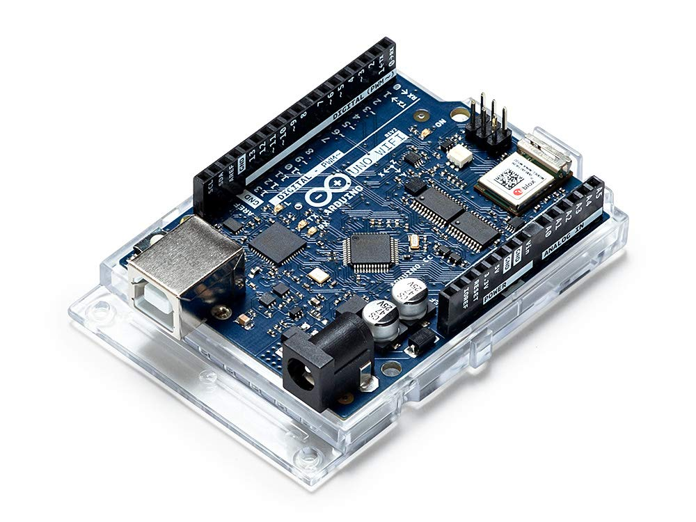
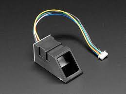
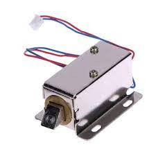

Project 2
Kluisbeveiliging
Dit was mijn eindejaarsproef in het 6de jaar informatica beheer.
In dit project koos ik ervoor om een kluis helemaal te automatiseren en te beveiligen aan de hand van domotica.
De kluis kon in realtime beweging in de kluis detecteren, had een vingerafdrukcensor en kon met pompen waterstroming regelen.

Deze bood stroom aan en verbond alles met elkaar.

Het kon ID's opslaan herkennen en aanmaken.

Deze kon enkel open bij een positieve match.